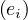
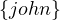

Professors: Anna Queralt, Óscar Romero
Student e-mail: jose.antonio.lorencio@estudiantat..upc.edu
This is a summary of the course Semantic Data Management taught at the Universitat Politècnica de Catalunya by Professors Anna Queralt and Óscar Romero in the academic year 22/23. Most of the content of this document is adapted from the course notes by Abelló and Nadal, [1], so I won’t be citing it all the time. Other references will be provided when used.
List of Algorithms
Property graphs were born in the database community, with the idea of enabling the possibility to query and process data in graph form. Up to date, there is not any official standard.
Property graphs are ocurrence-based, which means that they are defined by the particular instances inserted, without a pre-existent enforceable schema. The instances are represented by two main constructs:
Nodes: represent entities.
Edges: relate pairs of nodes, and may represent different types of relationships.
Both nodes and edges might be labeled and can have a ser of properties, represented as attributes1 . In addition, edges can be defined to be directed or undirected. Moreover, multi-graphs are allowed, meaning that two nodes can be related by multiple edges.
More formally:
Definition 1.1. A property graph, G, is a tuple , where:
V is a finite set of vertices.
E is a finite set of edges, such that V and E have no elements in commona .
Lab is a set of labels.
Prop is a set of properties and V al is the set of possible values that the properties can take.
ρ : E → V ×V is a total functionb .
Basically, ρ assigns each edge e ∈ E to the pair of nodes that it relates,  ∈ V × V . Usually,
ρ =
∈ V × V . Usually,
ρ =  means that edge e starts in u and ends in v.
means that edge e starts in u and ends in v.
λ :  → Lab is a total function. Now, for each vertex and each edge, we assign a label to
itc .
→ Lab is a total function. Now, for each vertex and each edge, we assign a label to
itc .
σ : ×Prop → V al is a partial functiond . Here, we are assigning the values of each property of each node/edge.
In this example, we have the visual representation of a simple graph. Let’s create each of the components of the formal definition:
V = .
E = .
Lab = .
Prop = .
V al = .
λ = Person,λ = Movie,λ = Person,λ = acts_in,λ = directs,λ = acts_in.
σ = Clint Eastwood,σ = male,σ = Unforgiven,σ = Anna Levine,
σ = female,σ = Bill,σ = IMDb,σ = Delilah,σ =
IMDb.
= Bill,σ = IMDb,σ = Delilah,σ =
IMDb.
The graph traversal pattern is defined as the ability to rapidly traverse structures to an arbitrary depth and with an arbitrary path description.
This framework is totally opposite to set theory, on which relational databases are based on. In the relational theory, this is equivalent to joining data and selecting data, while in a graph database, the relationships are explicit (there no foreign keys), there is no need to add nodes for artificial concepts and we can consider the joins as being hard-wired in the data. This makes traversing from one node to another a constant time operation.
Traversing graph data depends on three main variables:
The query topology, which refers to the complexity of what are we looking for, and the traversal seeds, which are the way in which the search is started.
The size of the graph, typically measured as the number of edges.
The topology of the graph.
There are basically two types of operations:
Content-based queries: in these queries, the value is relevant. We want to get a specific node, or the value of some attributes of a node/edge, etc. For example, aggregations.
Topological queries: in this case, only the topology of the graph is considered. Several business problems are solved using graph algorithms exploring the graph topology. For example, computing the betweenness centrality of a node.
Hybrid approaches: leverage both types of queries.
Of these types, we are going to focus on topological queries.
Two nodes are adjacent if there is an edge between them (usually disregarding direction). Therefore, the adjacency of a node is defined as all nodes adjacent to it:
The computational cost of this operation is linear on the number of edges to visit.
Examples of use cases are finding all friends of a person, airports with direct connection,...
A node is reachable from another node if there is a set of edges, called a walk, that can be traversed to get from one to the other (in this case, direction is usually taken into account, but it could be disregarded if needed). Now, the definition is as follows:
Additional constraints can be defined:
Fixed-length paths: we can fix the number of edges and nodes of the walk.
Shortest path: find the walk that minimizes some metric, such as the number of hops or the sum of weights of the edges,...
Non-repeated nodes: in this case the walk is called a path.
Non-repeated edges: in this case the walk is called a trail. Note that a path is more restrictive than a trail.
Regular simple paths: we can restrict the path to respect some regular expression.
The computational cost is high for large graphs, and it also depends on what constraints are we imposing. For instance, if we want to compute the shortest path, we can use Dijkstra’s algorithm, which is O, or O using priority queues.
Examples of use cases are finding all friends of a friend, all flight connections,...
We compute reachability, imposing that all edges in the walk have a label in a defined set of labels:
Another way to see this is that we are trying to determine all pairs of nodes such that there is a path between them such that the concatenation of the edge labels along the path forms a string in the language denoted by the regular expresion *, where L = .
Typically, the allowed topology and labels involved are expressed as a regular expression. In general, this problem is known to be NP-complete.
In this case, we want to find all subgraphs that follow a given pattern. More formally, we have G =  and a
pattern P = and we want to find all G′ = such that V ′⊂ V,E′⊂ E and PG′, i.e., P and G′ are
isomorphic, i.e., there are biyections V ′ V p and E′ E
p.
and a
pattern P = and we want to find all G′ = such that V ′⊂ V,E′⊂ E and PG′, i.e., P and G′ are
isomorphic, i.e., there are biyections V ′ V p and E′ E
p.
This problem is also NP-complete.
Examples of use cases are finding all groups of cities such that all of them are directly connected by flights (find cliques),...
Among the operations that we have seen so far, it is interesting, in the context of property graphs, to focus on pattern matching. Now, we use basic graph patterns (bgps), which are equivalent to conjunctive queries, and are a property graph where variables can appear in place of any constant.
A match for a bgp is a mapping from variables to constants, such that when the mapping is applied to the bgp, the result is a subgraph of the original graph.
The results for a bgp are all mappings from variables in the query to constants that comprise a match.
Example 1.2. A simple pattern matching. Assume we have the same graph we used before:
And the following bgp:
Here, I have coloured variables in red, and left constant in black.
Let’s see some matches:
And so on...
Now, we are going to formalize a bit the intuition built in the previous explanation and example. Evaluating a bgp P, against a graph G corresponds to listing all possible matches of P with respect to G:
Definition 1.2. Given an edge-labelled graph G = and a bgp P = , a match of P in G is a mapping
such that:
For each constant a ∈ Const, h = a, i.e., constants are preserved.
For each edge ∈ E′, we have ∈ E. This imposes that
Each edge of P is mapped to an edge of G.
The structure of P is preserved in its image under h in G.
Matches can be defined using different semantics on what we consider equivalent graphs, and what conditions the function h have to meet:
Homomorphism-based semantics: multiple variables in P can map to the same constant in G (h is not necessarily inyective). This correspondes to the familiar semantics of select-from-where queries in relational databases.
Isomorphism-based queries: we add the constraint that h must be inyective.
Nonetheless, there are intermediate solutions:
Strict isomorphism: corresponds to the isomorphism-based queries, in its stricter sense. h is inyective.
No repeated-node semantics: h is only inyective for nodes.
No repeated-edge semantics: h is only inyective for edges.
Graph Query Languages are declarative languages used to query a graph. Typically, a GQL matches an extended version of pattern matching, and each database engine chooses fix semantics for it, not existing a common agreement nor standard. There are also APIs provigin implementation of graph metrica or label-constrained shortest path, which, depending on the metric or algorithm chosen, maps to adjacency, reachability or pattern matching.
There are different types of queries, each of them using a different access plan:
Adjacency queries: neighbourhood queries require accessing the basic data structure and navigate it. Thus, their performance depends on the database implementation and the specific query, as the time to find a node or edge depends on this implementation.
Regular path queries: combine pattern matching and reachability and require specific graph-oriented algorithms. They are equivalent to conjunctive queries. They are also called navigational graph patterns.
RPQs extend the bgp definition by allowing regular expressions on edges to describe path queries in a pattern, i.e., a path is described as
where x,y are nodes in G and α is a regular expression over Lab. The regular expressions differ from language to language. Some usual expressions are:
The Kleene star *: 0 or more ocurrences.
The Kleene plus +: 1 or more ocurrences.
Concatenation ∘
Inverse -
Union |:
Combinations of them and the labels in Lab.
Example 2.1. Some simple RPQs. In our previous example, we can define some simple RPQs:
Find all co-actors of all actors:
Retrieve all actors you can reach by transitively following the co-actoring relationship, at least once:

Complex graph patterns: add further expressivity beyond conjunctive queries, such as groupings, aggregations and set operations. The previous RPQs are equivalent to conjunctive queries without projections, but database languages are richer than this, enforcing GQLs to implement more complex semantics. GraphQL was the first graph algebra extending RPQs with relational-like operators.
Cypher was created by Neo4j, and acts as a de facto standard, adopted by other graph databases. It is a high-level, declarative language, providing both DDL (Data Definition Language) and DML (Data Modification Language) capabilities, and allowing navigational graph patterns, except concatenation.
It applies pattern matching under no-repeated-edges isomorphism semantics. The available clauses are:
DML:
MATCH: the graph pattern to match.
WHERE: filtering criteria.
WITH: divides a query into multiple distinct parts.
RETURN: define what to return.
DDL:
CREATE | MERGE: creates nodes and relationship. Merge does it only if it does not exist beforehand, entailing an overhead.
DELETE: removes nodes, relationships and properties.
SET: set values of properties.
FOREACH: performs updating actions once per element in a list.
Cypher applies a data pipeline, where each stage is a MATCH-WHERE-WITH/RETURN block, allowing the definition of aliases to be passed between stages.
For example, uppose you have a graph database with Person nodes and two types of relationships: FRIENDS_WITH and WORKS_WITH. You want to find all mutual friends of Alice and Bob who also work with someone named Charlie. You can achieve this with the following Cypher query:
In this query, we have three stages in the data pipeline:
MATCH (Stage 1): Match the graph pattern where Alice and Bob have mutual friends. Bind the mutual_friend node.
WITH: Pass the mutual_friend node to the next stage.
MATCH (Stage 2): Match the graph pattern where the mutual_friend from the previous stage works with Charlie.
RETURN: Return the name of the mutual friend who meets both criteria (being a mutual friend of Alice and Bob and working with Charlie).
In this example, the WITH clause is used to separate the query into two stages. The first stage finds all mutual friends of Alice and Bob, and the second stage filters those mutual friends to only include the ones who work with Charlie. The use of WITH here is what enables the pipelining of stages in the query.
Example 2.2. Given the following graph:
Return all nodes
Return all edges
Return all neighbour nodes of ’John’
Return the incident nodes of all edges
There is an ongoing big effort towards stardardization of Graph Query Languages, through the GQL project.
Exercise 3.1. Understand the relationships between the basic graph operations. Answer the following questions:
Is adjacency subsumed by reachability?
No, because there is no way to compute all adjacent nodes to a given node by answering reachability queries.
Is adjacency subsumed by pattern matching?
Yes, the adjacency query Adjacent is equivalent to the pattern matching query Match.
is equivalent to the pattern matching query Match.
Is reachability subsumed by pattern matching?
Yes, the reachability query Reachable is equivalent to !not_empty.
is equivalent to !not_empty.
Note that in the cases in which a query is subsumed in another, it makes sense to have the simplified version, which can be optimized as a simpler case of pattern matching.
Notice that so far, the operations have been presented conceptually, being agnostic of the underlying technology. The theoretical costs are:
Adjacency is linear in the amount of vertices to visit O.
Reachability is O using Dijkstra’s shortest path.
Label-constrained reachability is O for a single pair of vertices and O for all pairs. It is
NP-complete if we enforce no-repeated-edges isomorphism semantics.
for all pairs. It is
NP-complete if we enforce no-repeated-edges isomorphism semantics.
Pattern matching in general is NP-complete.
Navigational pattern matching is also NP-complete, but can be reduced to O using bounded simulation algorithms.
Exercise 3.2. Identify the most efficient algorithm to solve a given query. Assume a graph containing relationships and nodes of actors and films (the same as before, but with virtually more information). Define:
A query that should be solved as an Adjacency problem.
Retrieve all pairs of such that Person acts in Film.
A query that should be solved as a Label-constrained Reachability problem.
Retrieve all pairs of actors related by coacting relationship.
A query that should be solved as a Navigational Pattern matching problem
People and movies in which the person acts and directs.
NO! This can be done with reachability, repeating the same node:
So, we need something else... If we fix something in the middle, then we cannot use reachability. For example, retrieve all co-actors related by the Movie Titanic:
We can also enforce other complex constraints, such as: retrieve all movies in which there are exactly 3 actors:
Dijkstra’s algorithm defines a method to find the shortest path between two nodes in a graph in which the edges have a cost assigned (it can be used in general if we take the distance between two nodes as the number of edges used to go from one to the other).
More formally, if we have a path between two nodes, u,v, P = , then the distance of the path
is
= , then the distance of the path
is
where c is the cost of going through edge ei. If we want to account only for the number of edges used, we can
then define c = 1 for all e ∈ E.
= 1 for all e ∈ E.
Dijkstra2 noticed two very convenient properties of shortest paths:
Every subpath of a shortest path is itself a shortest path.
This is easy to see, since if we have a shortest path between u and v, P , and we take two of the
nodes that are included in the path, say u1 and u2, then the subpath that goes from u1 to u2 must also
be of shortest length. Imagine it was otherwise, then there would be a path P′ shorter than the
subpath we found in P. Then, we could substitute this subpath by P′, and the new path would be shorter
than P. But P is a shortest path, so this is not possible.
, and we take two of the
nodes that are included in the path, say u1 and u2, then the subpath that goes from u1 to u2 must also
be of shortest length. Imagine it was otherwise, then there would be a path P′ shorter than the
subpath we found in P. Then, we could substitute this subpath by P′, and the new path would be shorter
than P. But P is a shortest path, so this is not possible.
The triangle inequality of shortest paths:
The algorithm is detailed in Algorithm 1. Note that this algorithm is a bit more general, since it allows to find the shortest paths from one source node U to the rest of the nodes in the graph. If we want a specific one, we can stop when we reach it or just find it from the output. To get the shortest path from U to V , we would go to prev and traverse this in reverse until getting to U.
Even considering the most basic fragment of graph patterns and for all semantics applied (homomorphism, isomorphism, no-repeated node isomorphism or no-repeated edge isomorphism), the problem is NP-complete, and the problem is tackled using different techniques, algorithms and heuristics.
A metric can be defined as a combination of adjacency, reachability, pattern matching and complex graph patterns, so the cost of a metric depends on how it is defined. Nevertheless, there are very usual and relevant metrics, which are typically provided as built-in functions. For example, the min/max degree in the graph, its diameter, pageRank,...
A pipeline is a list of algorithms over a graph, which are pipelined, inputting the output of an algorithm to the next one, to obtain some result. Therefore, we can see a metric as a pre-defined pipeline, but a pipeline can be as complex as we want/need.
An embedding is a vector representation of a graph, and it is useful to perform data analysis using typical ML algorithms, that have been developed using vectors.
A graph database is a software that provides a way to store and persist graph data, as well as means to process this data. Examples of graph databases are Neo4j or Titan.
A distributed graph framework refers to a processing framework over a graph database. We could compare it to MapReduce3 or to Spark4 , in the sense that it is a mean to extract data from a graph database, but not to store graphs. Examples of these frameworks are Pregel or Giraph.
Graph databases can be implemented in different ways, and each approach presents advantages and disadvantages.
In incidence lists, vertices and edges are stored as records of objects, such that each vertex stores incident edges, and each edge stores incident nodes.
Example 4.1. An Incidence List
This graph:
Can be encoded in an incidence list as follows:
The diagram is a bit messy, sorry for that.
Neo4j is implemented using incident lists, using the concept of linked lists.
In Neo4j, there is one physical file to store all nodes in-memory, with a Least Frequently Used cache policy, and a fixed size for the records (of 15B). This enables for very fast look-ups in O time.
Let’s delve into this. This is the anatomy of a Node:
| inUse | extra | |||||||||||||
| 1B | 1B | |||||||||||||
The first byte is used for some metadata, such as a flag ’inUse’.
The bytes 2-5 are the ID of the first relationship (edge) incident to the node.
The bytes 6-9 are the ID of the first property of the node.
The bytes 10-14 encode the labels of the node.
The last byte contain extra information.
There are two more kind of files to encode relationships and properties, also containing fixed size records and using a LFU cache policy. A relationship looks like this:
| meta | ||||||||||||||||||||||||||||||||
| 1B | ||||||||||||||||||||||||||||||||
The property file looks like this:
| meta | ||||||||||||||||||||||||||||||||
| 1B | ||||||||||||||||||||||||||||||||
In this case, the metadata field has a bit indicating whether the property belongs to a node or a relationship.
Example 4.2. Encode this graph using the seen nomenclature:
Nodes:
| meta | firstRel | firstProp | labels | extra | |
| n1 | e1 | p1 | l1 | ||
| n2 | e1 | p5 | l2 | ||
| n3 | e3 | p6 | l2 | ||
Relationships:
| meta | sId | dId | label | sNprevR | sNnextR | dNprevR | dNnextR | prop | |
| e1 | n1 | n2 | l3 | - | e2 | - | e2 | p3 | |
| e2 | n1 | n2 | l4 | e1 | - | e1 | e3 | - | |
| e3 | n3 | n2 | l3 | - | - | e2 | - | p8 | |
Properties:
| meta | n/eId | prevP | nextP | idName | idValue | |
| p1 | n | n1 | - | p2 | na1 | v1 |
| p2 | n | n1 | p1 | - | na2 | v2 |
| p3 | e | e1 | - | p4 | na3 | v3 |
| p4 | e | e1 | p3 | - | na4 | v4 |
| p5 | n | n2 | - | - | na5 | v5 |
| p6 | n | n3 | - | p7 | na1 | v7 |
| p7 | n | n3 | p6 | - | na2 | v8 |
| p8 | e | e3 | - | p9 | na3 | v6 |
| p9 | e | e3 | p8 | - | na4 | v4 |
Names:
| na1 | name |
| na2 | gender |
| na3 | role |
| na4 | ref |
| na5 | title |
Values:
| v1 | Clint Eastwood |
| v2 | Male |
| v3 | Bill |
| v4 | IMDb |
| v5 | Unforgiven |
| v6 | Delilah |
| v7 | Anna Levine |
| v8 | Female |
Labels:
| l1 | Person |
| l2 | Movie |
| l3 | acts_in |
| l4 | directs |
For each node, we store the list of its neighbors. If the graph is directed, the list contains only the outgoing nodes. This approach makes it cheaper for obtaining the neighbors of a node, but it is not suitable for checking if there is an edge between two nodes, since we would need to travers the lists for both nodes completely.
Example 4.3. An Adjacency List
This graph:
Can be encoded in an adjacency list as follows:
| 1 | → | 1 | → | 2 | → | 3 |
| 2 | → | 3 | ||||
| 3 | → | 1 | ||||
An incidence matrix is a bidimensional graph representation, in which rows represent vertices and columns represent edges. Then, a non-null entry represents that the source vertex is incident to the edge.
Example 4.4. An Incidence Matrix
This graph:
Can be encoded in an incidence matrix as follows:
 |  | |||||
 | e1 | e2 | e3 | e4 | e5 | |
|
nodes | 1 | 3 | 1 | 2 | 1 | 0 |
| 2 | 0 | 0 | 0 | 2 | 1 | |
| 3 | 0 | 2 | 1 | 0 | 2 | |
Where 0=’not incident’, 1=’source’, 2=’dest’ and 3=’source&dest’.
This is also a bidimensional graph representation, in which rows represent source vertices, and columns represent destination vertices. Therefore, each non-null entry represents that there is an edge from the source node to the destination node.
Example 4.5. An Adjacency Matrix
This graph:
Can be encoded in an adjacency matrix as follows:
 |  | destination | ||
 |  | 1 | 2 | 3 |
|
source | 1 | 1 | 1 | 1 |
| 2 | 0 | 0 | 1 | |
| 3 | 1 | 0 | 0 | |
Some graph databases and graph processing frameworks are based on strong assumptions that are not always explicit, but are rather a consequence of the internal implementation of graphs. We can distinguish between:
Operational graphs: they are the graph equivalent of a CRUD database. In this kind of graph database, nodes and edges can be deleted, updated, inserted and read. Examples are Neo4j or OrientDB.
Analytical graphs: these are snapshot graphs that cannot be modified by the final user, so they are the equivalent of a data warehouse. For example, the graph processing frameworks can be seen as analytical graphs.
When we have a centralized graph, the cost of the queries that we launch on it depends on the number of edges/nodes visited during processing. Therefore, this cost is affected by the graph size and its topology, and the processing algorithm used. But sometimes the graph is large and the algorithm expensive. For instance, navigational pattern matching, in the best case, is still of cubic computational complexity.
Also, graph computations are difficult to scale and parallelize, because:
Computations are data-driven: this means that the computations are driven by vertices and edges, with the structure of the computation not known a priori.
Unstructured problems: the data stored in graphs is usually unstructured and irregular, making it difficult to partition.
Poor locality: the computations and access patterns tend not to have very much locality.
High data access to computation ratio: since exploring the structure of a graph is more usual than performing large numbers of computations.
Sequential graph algorithms, which require random access to all the data, present poor locality and together with the indivisibility of the graph structure cause time and resource intensive pointer chasing between storage mediums in order to access each datum. In response to these shortcomings, new distributed frameworks based on the vertex-centric programming model were developed. This approach is:
No shared-memory (there is a local view of data).
Meant to converge upon iteration.
Naturally adapting to distributed settings.
As opposed to having a global perspective of the data (assuming all data is randomly accessible in memory), vertex-centric frameworks employ a local, vertex oriented perspective of computation, introducing the paradigm Think Like A Vertex (TLAV).
Several open-source solutions like HDFS, HBase, or Apache Titan can be used for storage. Proprietary solutions like Amazon Neptune also exist. Each approach has its own trade-offs: open-source solutions offer flexibility but may demand additional maintenance and expertise, while proprietary solutions provide comprehensive support but may pose usage limitations and costs.
For distributed processing frameworks to function effectively, graph data needs to be exposed as two views: a set of vertices and a set of edges. Traditional distributed data management considerations, like partitioning and replicas, apply to these views.
TLAV frameworks operate on a message passing interface and support iterative execution of a user-defined vertex program. Vertices pass messages to adjacent vertices, and this iterative process continues until a termination condition is met.
They might either follow the Bulk Synchronous Parallel (BSP) computing model, in which computation is based on superstep, where a superstep must finish entirely before the next superstep starts, defining a synchronization barrier per superstep; or an asynchronous computing model, which is prone to suffer from deadlocks and data races, but may improve the performance under certain assumptions/conditions.
Examples of TLAV frameworks include Pregel, Apache Giraph, and GraphX, each offering its own strengths and weaknesses. It’s also important to note the role of fault-tolerance in distributed graph processing. Ensuring system resilience to node failures is a critical aspect that helps maintain operation continuity.
Example 5.1. Calculating max using TLAV.
In the first superstep: all vertices send its value to its adjacent vertices.
On each superstep: each vertex compares the value that it has received (if any) to the current value that it has. If it is greater, then it updates. In case of update, it sends again this new value to adjacent nodes.
Stop condition: no vertex changes in a superstep.
The process could be as the following:
Here, when a node is red, is because it updated, and the red arrows indicate messages. The process finishes when no node changes.
As we have explained, TLAV framework supports iterative execution of a user defined vertex program over vertices of the graph. Programs are thus composed of several interdependent components that drive program execution, the vertex kernels. A synchronization barrier is set between interdependent components, defining the supersteps.
Therefore, a superstep is composed of different kernels, and it ends when all kernels finish, and all messages are sent. Then, there is a synchronization barrier, which is used to synchronize the obtained results, so that the next superstep can begin.
Example 5.2. Single-Source Shortest-Path
The following code computes the shortest path in a graph using the TLAV framework:
The execution could be as follows:
The colors indicate the same as in the previous example. The green node is the source node for the algorithm and the numbers indicate the weights of the edges.
We have seen that TLAV graph processing requires the graph data to be exposed in the form of two views: the set of vertices and the set of edges. Let’s see how TLAV can be achieved in a distributed environment. Let’s begin with an example:
Example 5.3. Consider the following distributed graph:
This graph can be represented as follows:
Here, we have depicted the two views, partitioned. Each partition is depicted by a yellow rectangle. And the instances are stored in the partitions. Note that the vertices do not store the nodes, I have draw them like that to facilitate readability.
Now, we want to set up a simple TLAV environment. We are going to send messages  . Each
message is sent to the node it is named after. For example, am goes to node a. The nodes will send the message to all
nodes to which they are connected, and these will generate a message named after them. For example, if b receive a
message, it will send bm. The first superstep of this process is:
. Each
message is sent to the node it is named after. For example, am goes to node a. The nodes will send the message to all
nodes to which they are connected, and these will generate a message named after them. For example, if b receive a
message, it will send bm. The first superstep of this process is:
Note how messages can be merged in two ways: intrapartition and interpartition. The messages in the white box would be sent to the vertices for the next superstep.
It is very important to realize that states can only be shared through messages, since there is no shared memory.
About the vertex kernel, keep in mind the after its execution, the vertices send messages to adjacent vertices, and these messages could be as complex as needed, and they can even modify the graph. The kernel must also include a halt condition, so that a node knows when to stop sending messages, and convergence can be achieved.
Pregel is a very famous TLAV framework. Its model of computation is as follows:
Input: a directed graph with three views:
List of nodes, uniquely identified.
List of edges.
Triplet views: an edge and its nodes information, showing all the information for the edge.
Processing: in each superstep the vertices work in parallel.
They can modify their state, the state of their outgoing edges, receive messages from the previous superstep, send messages to other vertices for the next superstep and modify the graph topology.
The algorithm finishes based on a voting to halt. This means that when a node halts, it becomes inactive and stop sending processing and sending messages, until it receives another messages. When all nodes are inactive, the process finishes.
Output: the set of values explicitly outputed by the vertices.
GraphX is a subproject of Apache Spark, built as a Spark module and following Pregel’s principles, but it only allows to send messahes to adjacent vertices.
It uses Spark GraphFrames to provide Pregel’s required views (vertices, edges and triplets) and provides a library with typical distributed algorithms, such as pageRank, connected componentes, triangle count,...
Scheduling refers to how user-defined vertex programmes are scheduled for execution. They can be Synchronous, Asynchronous, Both or Hybrid.
Synchronous scheduling is based on the Bulk Synchronous Parallel (BSP) processing model. Active vertices are executed conceptually in parallel over one or more iterations, called supersteps and synchronization is achieved through a global synchronization barrier situated between each superstep that block vertices from computing the next superstep until all workers complete the current one. Each worker has to coordinate with the master to progress to the next superstep.
Synchronization is achieved because the barrier ensures that each vertex within a superstep has access to only the data from the previous superstep. Note that inside a superstep, vertices can be scheduled in a fixed or random order, because the execution order does not affect the state of the program (it should not, at least).
Pros os synchronous scheduling:
Conceptually simple.
Good for certain algorithms.
Almost always deterministic, making synchronous applications easy to design, program, test, debug and deploy.
Scalable: potentially linear in the number of vertices and can benefit from batch messaging between supersteps.
Cons:
System throughput must remain high in each sueprstep ot justify the synchronization cost. Throughput is affected by the drop of active vertices or by the imbalance workload among workers, resulting in the system becoming underutilized; the iterative nature of graph algorithms, which suffer from ’the curse of the last reducer’ (straggler problem), where many computations finish quickly but a small fraction of computations take a desproportionately larger amount of time; and the speed of computation of each node.
The algorithm may not converge for some graph topologies. In general, algorithms that require some type of neighbor coordination may not always converge with the synchronous scheduling model without the use of some extra logic in the vertex program.
Asynchronous scheduling is different. There is no explicit synchronization points, so any active vertex is eligible for computation whenever processor and network resources are available. The vertex execution order can be dynamically generated and reorganized by the scheduler, and the straggler problem is eliminated. As a result, many asynchronous models outperform corresponding synchronous models, but at the expense of added complexity.
Pros:
Outperform synchronous systems when the workload is imbalanced.
Cons:
It cannot take advantage of batch messaging optimizations.
The typical pull model execution may result in unnecessary processing.
Asynchronous algorithms face more difficult scheduling problems and also consistency issues.
In general, synchronous execution generally accommodates IO bound algorithms, while asynchronous execution well-serves CPU bound algorithms by adapting to large and variable workloads.
Information is sent from one vertex program kernel to another via messages, which contain local vertex data and is addressed to the ID of the recipient vertex. A message can be addressed anywhere, but since vertices do not have ID information of all the other vertices, destination vertex IDs are typically obtained by iterating over outgoing edges.
After computation is complete and a destination ID for each message is determined, the vertex dispatches messages to the local worker process, which determines whether the recipient resides on the local machine or a remote one.
If it is in the local machine, the worker process the message directly into the vertex’s incoming messages queue.
Otherwise, the worker process looks up the worker ID of the destination vertex and places the message in an outgoing message buffer, which are flushed when they reach a certain capacity, sending messages over the network in batches. In principle, it tries to wait until the end of a superstep to send all messages in batch-mode.
There three main strategies to optimize message passing:
Sender-side combiner: messages from several nodes are merged in the sender worker, which sends them to the destination worker.
Receiver-side combiner: in this case, the sender worker sends all the messages produced by all nodes to the destination worker, which makes the merging.
Receiver-side scatter: the sender worker send a message, which is received by the destination worker, sending it to several nodes.
Shared memory exposes vertex data as shared variables that can be directly read or modigied by other vertex programs, avoiding the additional memory overhead constituted by messages. This is typical of centralized graph processing, but there are also some distributed systems that apply it.
The main problem is that for shared-memory TLAV frameworks, race conditions may arise when an adjacent vertex resides on a remote mahcine. Shared-memory TLAV frameworks often ensure memory consistency through mutual exclusion by requiring serializable schedules. Serializability means that every parallel execution has a corresponding sequential execution that maintains consistency.
The most prominent solutions up to today are:
In GraphLab, border vertices are provided locally cached ghost copies of remote neighbors, where consistency between ghosts and the original vertex is maintained using pipelined distributed locking.
In PowerGraph and GiraphX, graphs are partitioned by edges and cut along vertices, where consistency across cached mirrors of the cut vertex is maintained using parallel Chandy-Misra locking.
The reduced overhead of shared memory compared to message passing may lead to 35% faster converges when computing PageRank on a large web graph.
Large-scake graphs must be divided into parts to be placed in distributed storage/memory. Good partitions often lead to improved performance, but expensive strategies to partition can end up dominating processing time, leading many implementations to incorporate simple strategies, such as random placement.
Effective partitioning evenly distributes the vertices for balanced workload while minimizing imterpartition edges to avoid costly network traffic. This is formally known as a k-way graph partitioning, which is a NP-complete problem, with no fixed-factor approximation.
The leading work in graph partitioning can be broadly characterized as rigorous but impractical mathematical strategies or pragmatic heuristics used in practices, but this is currently an open problem.
In a knowledge graph, every node is represented with a unique identifies and can be universally reffered, i.e., they can be referred potentially from any other database in the world.
Metadata is represented as nodes and edges in the graph.
Knowledge graphs facilitate linking data, because linking via their metadata is much more powerful than by the characteristics of the instances, and it is a unique feature of their own. In Figure 2, we can see several relationships between metadata nodes:
A subClassOf B indicates that concept A is a subset (more specific) of concept B.
A equivalentClass B indicates that classes A and B represent the same information, even if they are stored in different machines.
A equivalent B also indicate equivalence of representation, but in this case it refers to subgraphs of the metadata.
Example 6.1. Assume Knowledge Graph as the canonical data model. First, model as graphs each source (separately):
Model schema and some instances for each source:
| Source 1 |
| User |
| Tweet |
| Date |
| Location |
| Source 2 |
| Product |
| Product Features |
| Source 3 |
| User |
| Product |
| Time |
Then, relate the metadata from each graph with new edges generating a unique connected graph. For this:
Look for similar or identical concepts.
Think of interesting relationships you could exploit later.
Assume you can use the following pre-defined edges: equivalentClass, type and subClassOf, which embed the semantics already discussed.
A possible solution is the following:
Note that to model the ternary relationship between (User, Product, Time) we needed to add an artificial node. This is called reification.
Schema.org is a global initiative to mark up data. It provides a vocabulary of terms and their relationships. Google and others ahve built their semantic-aware searchers based on schema.org and built huge knowledge graphs based on it.
RDF is a simple language for describing annotations (facts) about resources. It is the most basic ontology language. The triples that it uses as basic construct map to first order logic as grounded atomic formulas, and blank nodes map to existential variables.
The basic RDF block is the RDF statement which is a triple representing a binary relationship between two resources or between a resource and a literal. The syntax is:
<subject predicate object>
where:
subject S has value object O for predicate P.
subject and predicate are resources and must be URIs.
object can be a resource (URI) or a literal (constant value).
As can be inferred from this, resources are identified by URIs, which are global identifiers. A URI is composed of a URL and a URN:
URN is the Universal Resource Name: id
URL is the Universal Resource Location: where it is
Many times, we omit the URL for simplicity, and refer to the URI as :URN.
A blank node is a resource without a URL (i.e., _).
Literals are atomic values such as strings, dates or numbers.
We can thus define a RDF graph (or semantic graph) as a set of these RDS statements.
To query RDF graph, SPARQL is the de facto language (also for it variants and extensiosn). It is inspired by SQL but oriented to express graph operations.
Usually, RDF is serialized using the XML format.
The rdf URL is a namespace for RDF.
Other RDF syntaxes are turtle (which is human-readbale), N-triples or Notation 3.
RDF modeling is based on binary relationships, but n-ary relationships may be needed, so blank nodes were presented as a solution for this. A blank node is a node without a URI, which cannot be referenced and can only be subjects or objects. Its semantics are not completely clear yet, but their de facto use is as an identifier without a URI. The W3C position is this regard is to use blank nodes for incomplete data: unknown values or anonymized values. The de facto use is pragmatic, but good practices discourage their use: all resources should have a proper URI.
The following use of a blank node:
Can be expressed as:
:oscar :takes [:course :SDM]
This is quoting, which is general is [property object], and the subject is the blank node.
Notice that we cannot express neither schema nor additional constraints, such as ’at least one’ or ’at most three’.
RDF-star in as RDF extension, more comapct and with a predice syntax for reification.
Example 7.3. The following is RDF-star:
Here, we have what is called an embedded triple, and it models the 3-way relationship between (:emp22, :emp38, “Assistant Designer”).
SPARQL-star is an extension of SPARQL to query RDF-star graphs.
RDFS extends RDF to not only consider data instances, but also schema. In this case, we can define classes and relationships between them, using the same principles as for instances. It defines rdfs:, a namespace for RDFS, in which a set of resources needed to express contraints is defined.
RDFS allows to specify the following constraints:
Declare resources as instances of certain classes.
:Oscar :type :lecturer
Inclusion statements between classes and between properties, which allow us to define taxonomies.
:lecturer :subclassOf :human
Assert the class of a subject (or an object) of a property
The predicate :parentOf must relate instnaces of the class :human. Therefore, any subject/object of a triple where :parentOf is the predicate is atumatically asserted as :human.
Instances:
:Oscar rdf:type :Lecturer
Taxonomies:
Classes: :Lecturer rdfs:subclassOf :Human
Relationships: :ResponsibleFor rdfs:subpropertyOf :Lecutres
Domain and Range:
:Lectures rdfs:domain :Human
:Lectures rdfs:range :Course
rdfs:Resource: the class of all resources. Everything is a resource.
rdfs:Class: the class of all classes.
rdfs:Literal: the class of all literals.
rdf:Property: the class of all properties.
rdf:Statement: the class of all statements.
These core classes add another level of abstraction above the metadata layer.
In RDFS we can infer new instances (knowledge) from the statements created by the users. It is based on rule-based reasoning and there are two kinds of inference:
Core type inference: it infers the type with regards to the core classes of an asserted resource R.
Domain-specific inference: it can be:
Inclusion dependencies:
If :A rdfs:subclassOf :B and :B rdfs:subclassOf :C then :A rdfs:subclassOf :C.
Type inference: it infers the type of an asserted resource R with respect to a user created class X.
rdf:type: relates a resource to its class:
:oscar rdf:type :lecturer
The subject resource (:oscar) is declared to be an instance of the object class (:lecturer).
The inferred knowledge is:
Core type inference: the object is inferred as a Class:
:lecturer rdf:type rdfs:Class
rdfs:subClassOf: relates a class to one of its superclasses:
:lecturer rdfs:subClassOf :human
:oscar rdf:type :lecturer
The subject and object are declared as classes and any instance of the subject is declared as an instance of the object.
The inferred knowledge is:
Core type inference: the subject and object are inferred as classes:
:lecturer rdf:type rdfs:Class
:human rdf:type rdfs:Class
Domain specific inference: inclusion dependency:
:oscar rdf:type :human
rdfs:subPropertyOf: relates a property to one of its superproperties:
:responsibleFor rdfs:subPropertyOf :lectures
:oscar :responsibleFor :OD
The subject and object resources are declared to be properties and any subject, object related by subject predicate are automatically declared as to be related by the object predicate.
The inferred knowledge is:
Core type inference: the subject and object are inferred as properties:
:responsibleFor rdf:type rdf:Property
:lectures rdf:type rdf:Property
Domain specific inference: inclusion dependency:
:oscar :lectures :OD
rdfs:domain: specifies the domain of a property:
:lectures rdf:domain :lecturer
:oscar :lectures :OD
The inferred knowledge is:
Core type inference: the subject is declared to be a property and the object is declared to be a class:
:lectures rdf:type rdf:Property
:lecturer rdf:type rdfs:Class
Domain specific inference: type inference:
:oscar rdf:type :lecturer
rdfs:range: specifies the range of a property:
:lectures rdf:range :course
:oscar :lectures :OD
The inferred knowledge is:
Core type inference: the subject is declared to be a proeprty and the object is declared to be a class:
:lectures rdf:type rdf:Property
:course rdf:type rdfs:Class
Domain specific inference: type inference:
:OD rdf:type :course
Consider the graph that we have used many times already:
Create a correct RDFS graph capturing as much constraints as possible from it. What triples may you infer from the asserted RDFS graph?
The RDFS graph can be the following:
And the instantiation of the data:
| Instantiation | Inference |
| :clintEastwood :hasRole :bill | :clintEastwood rdf:type Actor :bill rdf:type :role :clintEastwood rdf:type Person |
| :bill :inMovie :Unforgiven | :bill rdf:type :role :Unforgiven rdf:type :Movie |
| :Ungorgiven :title ’Unforgiven’ | :Unforgiven rdf:type :Movie |
| :clintEastwood :name ’Clint Eastwood’ | :clintEastwood rdf:type :Person |
| :clintEastwood :gender :male | :clintEastwood rdf:type :Person :male rdf:type :genderClass |
| :bill :roleName ’Bill’ | :bill rdf:type :role |
| :bill :red ’IMDB’ | :bill rdf:type :role |
| :annaLevine :hasRole :delilah | :annaLevine rdf:type :Actor :delilah rdf:type :role :annaLevine rdf:type :Person |
| :delilah :inMovie :Unforgiven | :delilah rdf:type :role :Unforgiven rdf:type :Movie |
| :annaLevine :name ’Anna Levine’ | :annaLevine rdf:type :Person |
| :annaLevine :gender :female | :annaLevine rdf:type :Person :female rdf:type :genderClass |
| :delilah :roleName ’Delilah’ | :delilah rdf:type :role |
| :delilah :ref ’IMDB’ | :delilah rdf:type :role |
| :clintEastwood :directs :Unforgiven | :clintEastwood rdf:type :Director :Unforgiven rdf:type :Movie :clintEastwood rdf:type Person |
SPARQL Protocol And RDF Query Language (SPARQL) is the standard query language for RDF(S) graphs, being also a W3C recommendation and supporting RDFS and OWL under specific entailments.
SPARQL is based on navigational pattern matching, and simple RDF graphs are used as query patterns. The semantics applied are homomorphism semantics.
SPARQL has 4 basic forms that retrive either result sets or RDF graphs:
SELECT: returns all, or a subset of, the variables bound in a query pattern match.
CONSTRUCT: returns an RDF graph constructed by substituting variables in a set of triple templates.
ASK: returns a boolean indicating whether a query pattern is matched or not.
DESCRIBE: returns an RDF graph that describes the resources found.
A SPARQL Endpoint is an endpoint accepting SPARQL queries and returning the results via HTTP.
Example 8.3. A more complete example:
This query is equivalent to: SELECT x,y WHERE x LECTURES y.
SPARQL allows property paths based on regular expressions.
Example 8.4. Take into account the following graph:
And write the following queries, assuming no entailment regime:
Get the name of all actors that participated in Juno:
Get the name of all directors:
Get the name of all persons:
Get the title of all movies:
The most basic entailment regime supported by SPARQL is simple entailment, in which graph patterns are evaluated by means of pattern matching under homomorphism semantics.
Nonetheless, more elaborate entailment relations have been developed, to retrieve solutions that are logical consequences of the axioms asserted. The most popular ones are RDFS entailment and OWL 2 RDF-Based Semantics entailment.
The RDFS entailment rules are presented in the following table:
| If S contains | Then S RDFS entails recognizing D: | |
| rdfs1 | any IRI a in D | a rdf:type rdfs:Datatype |
| rdfs2 | a rdfs:domain x. y a z. | y rdf:type x |
| rdfs3 | a rdfs:range x. y a z | z rdf:type x |
| rdfs4a | x a y | x rdf:type rdfs:Resource |
| rdfs4b | x a y | y rdf:type rdfs:Resource |
| rdfs5 | x rdfs:subPropertyOf y. y rdfs:subPropertyOf z | x rdfs:subPropertyOf z |
| rdfs6 | x rdf:type rdf:Property | x rdfs:subPropertyOf x |
| rdfs7 | a rdfs:subPropertyOf b. x a y | x b y |
| rdfs8 | x rdf:type rdfs:Class | x rdfs:subClassOf rdfs:Resource |
| rdfs9 | x rdfs:subClassOf y. z rdf:type x | z rdf:type y |
| rdfs10 | x rdf:type rdfs:Class | x rdfs:subClassOf x |
| rdfs11 | x rdfs:subClassOf y. y rdfs:subClassOf z | x rdfs:subClassOf z |
| rdfs12 | x rdf:type rdfs:ContainerMembershipProperty | x rdfs:subPropertyOf rdfs:Member |
| rdfs13 | x rdf:type rdfs:Datatype | x rdfs:subClassOf rdfs:Literal |
The Russel’s Paradox is a theoretical paradox that arises within a naïve set theory, by considering the set of all sets that are not members of themselves. This paradox arises in RDFS. This means that the RDFS regime entailment is flawed, and the reason is that the RDFS core classes and properties are ill-defined. The problems are:
rdfs:Class is an instance of itself. This allows the possibility of having inifinitely many layers of classes.
rdfs:Resource is a superclass and an instance of rdfs:Class at the same time.
rdfs:subClassOf, rdf:type, rdfs:Range and rdfs:Domain are both used to define the other RDFS primitives and the user metadata.
The SPARQL community rethought the RDFS metamodel to introduce fix-point reasoning, disallowing for infinite inference loops, and having elements organized in a strict order, i.e., an element cannot be an element and a set at the same time, and no element can be placed twice in a taxonomy at different levels. This gave birth to the modified RDFS Entailment Regime:
| If S contains | Then S RDFS entails recognizing D: | |
| rdfs1 | any IRI a in D | a rdf:type rdfs:Datatype |
| rdfs2 | a rdfs:domain x. y a z. | y rdf:type x |
| rdfs3 | a rdfs:range x. y a z | z rdf:type x |
| rdfs4a | x a y | x rdf:type rdfs:Resource |
| rdfs4b | x a y | y rdf:type rdfs:Resource |
| rdfs5 | x rdfs:subPropertyOf y. y rdfs:subPropertyOf z | x rdfs:subPropertyOf z |
| rdfs6 | x rdf:type rdf:Property | x rdfs:subPropertyOf x |
| rdfs7 | a rdfs:subPropertyOf b. x a y | x b y |
| rdfs8 | x rdf:type rdfs:Class | x rdfs:subClassOf rdfs:Resource |
| rdfs9 | x rdfs:subClassOf y. z rdf:type x | z rdf:type y |
| rdfs10 | x rdf:type rdfs:Class | x rdfs:subClassOf x |
| rdfs11 | x rdfs:subClassOf y. y rdfs:subClassOf z | x rdfs:subClassOf z |
| rdfs12 | x rdf:type rdfs:ContainerMembershipProperty | x rdfs:subPropertyOf rdfs:Member |
| rdfs13 | x rdf:type rdfs:Datatype | x rdfs:subClassOf rdfs:Literal |
Definition 9.1. A ontology is a formal description of a domain in terms of the concepts and roles or properties between them. More precisely, it is a controlled vocabulary or schema, usually called the TBOX, with aligned instances, or ABOX.
The TBOX and ABOX assertions are described with formal semantics and, based on its formal semantics, it defines inference rules, based on some kind of reasoning.
Note that RDF graphs are not ontologies and that RDFS are ontologies only if we take care of making them to be, by following the good practices. OWL graphs (we will see them later) are forced to be ontologies.
First Order Logic (FOL) is suitable for knowledge representation, since classes can be represented as unary predicates, properties/relationship as binary predicates and constraints as logical formulas using the predicates.
Nonetheless, we must take into consideration of undecidability problem: there is no algorithm that determines if a FOL formula implies another. Therefore, we have to work with decidable fragments of FOL:
Description logics: binary predicates with bounded number of variables.
Datalog: Horn-clauses.
The characteristics of these are summarized in the following table:
| Datalog | Description Logics | |
| Focus | Instances | Knowledge |
| Approach | Centralized | Decentralized |
| Reasoning | Closed-World Assumption | Open-World Assumption |
| Unique name | Unique name assumption | Non-unique name assumption |
The open-world assumption implies that everything can be true, unless the opposite is explicitly indicated.
A TBOX is characterized by a set of constructs for building complex concepts and roles from atomic ones.
Concepts correspond to classes.
Roles correspond to relationships.
Then, the TBOX defines the terminology of the domain, with formal semantics given in terms of interpretations:
Definition 9.2. An interpretation  = consists of a nonempty set Δ, the domain of , and an
interpretation function ⋅, which maps:
= consists of a nonempty set Δ, the domain of , and an
interpretation function ⋅, which maps:
Each individual, i.e., each element in the real world that we want to represent, a to an element a∈ Δ.
Each atomic concept A to a subset A⊂ Δ.
Each atomic role P to a subset P⊂ Δ× Δ.
With these basic pieces, we can construct more complex concepts:
| Construct | Syntax | Semantics | Example |
| atomic concept | A | A⊂ Δ | Doctor |
| atomic role | P | P⊂ Δ× Δ | hasChild |
| atomic negation | ¬A | Δ\ A | ¬Doctor |
| conjunction | C ⊓ D | C∩ D | Human⊓Male |
| unqualified existence restriction | ∃R | ∃hasChild | |
| value restriction | ∀R.C | ∀hasChild.Male | |
| bottom | ⊥ | ∅ | |
In this table, C and D denote arbitrary concepts, i.e., a combination of atomic concepts through appropriate constructs, and R an arbitrary role, i.e., a combination of atomic roles through appropriate constructs.
The combination of these constructrs form the basic language  of the family of languages. However, this can
be extended, adding new constructs:
of the family of languages. However, this can
be extended, adding new constructs:
| Construct | ⋅ | Syntax | Semantics | Example |
| disjunction | C ⊔ D | C∪ D |  ⊔ ⊔ |
|
| top | ⊺ | Δ | ||
| qualified existence restriction |  | ∃R.C | ∃Treats.Doctor | |
| full negation | ¬C | Δ\ C | ¬ |
|
|
number restrictions | | ≥ 5 Treats | ||
| ≤ 5 Treats | ||||
|
qualified number restriction | | ≥ 5 Treats. | ||
| ≤ 5 Treats. | ||||
| inverse role | | R- | Treats- | |
| role closure | reg | R* | * | * |
Disjunction:
Formally:
Natural language: all entities such that all their childs are a doctor or a lawyer.
Qualified existencial restriction:
Formally:
Natural language: all entities that has a child who is a doctor.
Full negation:
Formally:
Natural language: all entities that not a doctor nor a lawyer.
Number restrictions:
Formally:
Natural language: all entities that have at least two childs and at most one sibling.
Qualified number restrictions:
Formally:
Natural language: all entities that have at least two childs that are doctors.
Inverse role:
Formally:
Natural language: all entities that are childs of doctors.
Reflexive-transitive role closure:

Formally:
Natural language: all entities that are ascendent of some doctor.
A Description Logics TBOX only includes terminological axioms of the following form:
Inclusion:
C1 ⊑ C2 is satisfied by if C1⊆ C2.
R1 ⊑ R2 is satisfied by if R1⊆ R2.
Equivalence:
C1 ⊑ C2,C2 ⊑ C1.
The following axioms define a TBOX:
| Woman ≡ | Person ⊓ Female | ||
| Man ≡ | Person ⊓¬Woman | ||
| Mother ≡ | Woman ⊓∃hasChild.Person | ||
| Father ≡ | Man ⊓∃hasChild.Person | ||
| Parent ≡ | Father ⊔ Mother | ||
| Grandmother ≡ | Mother ⊓∃hasChild.Parent | ||
| MotherWithManyChildren ≡ | Mother⊓≥ 3 hasChild | ||
| MotherWithoutDaughter ≡ | Mother ⊓∀hasChild.¬Woman | ||
| Wife ≡ | Woman ⊓∃hasHusband.Man |
The ABOX defines the instances in terms of the terminological axioms defined in the TBOX, by using concept (Student) and role (Teaches) assertions.
Inclusion assertions on concepts:
| Father ≡ | Human ⊓ Male ⊓∃hasChild | ||
| HappyFather ⊑ | Father ⊓∀hasChild. | ||
| HappyAnc ⊑ | ∀descendant.HappyFather | ||
| Teacher ⊑ | ¬Doctor ⊓¬Lawyer |
Inclusion assertions on roles:
| hasChild ⊑ | descendant | ||
| hasFather ⊑ | hasChild- |
The ABOX membership assertions are:
Example 9.4. The following UML diagram
can be represented as the TBOX:
| ∃hasFather ⊑ | Person | ||
| ∃hasFather-⊑ | Person | ||
| Person ⊑ | ∃hasFather |
Satisfiability looks for contrasictions in the asserted axioms. Without negations, everything is satisfiable, and TBOX axioms are just used to infer knowledge for the asserted elements. This is the case of RDFS, and in case of an error, the knowledge base will simply infer wrong knowledge, but no error nor alert will be rased.
Including negation, we can identify mistakes in the ABOX, since such interpretations will not be a model for that ontology.
Example 9.5. Is the following interpretation a model? Can you think of an interpretation that is a model?
The TBOX is:
| ∃Teaches ⊑ | Teacher | ||
| ∃Teaches-⊑ | Course | ||
| Teacher ⊑ | ¬Course |
And the ABOX is:
It is not a model, because
and
and both expressions cannot evaluate to true at the same time.
To make a model, we can change the ABOX to be
in which case all assertions from the TBOX and the ABOX can be satisfied.
Example 9.6. Description Logics Reasoning
Consider the following TBOX and make all possible inferences:
| Researcher ⊑ | ¬Professor | ||
| Researcher ⊑ | ¬Lecturer | ||
| ∃TeachesTo-⊑ | Student | ||
| Student ⊓¬Undergrad ⊑ | GraduateStudent | ||
| ∃TeachesTo.Undergrad ⊑ | Professor ⊔ Lecturer |
The TBOX inferences are:
| Researcher ⊑ | ∃TeachesTo.GraduateStudent |
Do the same with this ABOX:
| TeachesTo | ||
| ¬GraduateStudent | ||
| ¬Professor |
The ontology inferences are:
| Undergrad | ||
| Lecturer |
Concept Satisfiability: a concept C is satisfiable with respect to the TBOX if there is a model of
such that C is not empty, i.e., TC ≡⊥.
Subsumption: a concept C1 is subsumed by another concept C2 with respect to the TBOX if, for
every model of , we have C1⊆ C2, i.e.,  C1 ⊑ C2.
C1 ⊑ C2.
Equivalence: C1 and C2 are equivalent with respect to if, for every model of we have C1 = C2,
i.e.,  C1 ≡ C2.
C1 ≡ C2.
Disjointness: C1 and C2 are disjoint with respect to if, for every model of , we have C1∩C2 = ∅,
i.e.,  C1 ⊓ C2 ≡⊥.
C1 ⊓ C2 ≡⊥.
Functionality implication: a functionality assertion, , is logically implied by if, for every
model of ,we have that ∈ R and ∈ R implies o1 = o2, i.e.,  .
.
In the next table, the complexity for concept satisfiability for each of the logic families we have seen is shown:
| Family | Complexity |
| , | PTIME |
| , | NP-complete |
| | coNP-complete |
| ,,, | PSPACE-complete |
It can be observed that there are two sources of complexity:
The union is of type NP.
The existential quantification is of type coNP.
When they are combined, the complexity jumps to PSPACE.
Note that number restrictions do not add complexity.
The problem of ontology satisfiability consists of verifying whether an ontology is satisfiable or not, i.e., whether the ontology admits at least one model.
The problem of concept instance checking consists of verifying whether an individual c is an instance of a
concept C in , i.e., whether  C or not.
C or not.
The problem of role instance checking consists of verifying whther a pair of individuals is an instance of a
role R in , i.e., whether  R or not.
R or not.
The problem of query answering consists of finding the certain answers:
We need to bear in mind the open-world assumption: something evaluates to false only if it contradicts other information in the ontology.
Example 9.7. Open-world assumption illustrative example.
Consider the following ABOX:
| hasSon | ||
| hasSon | ||
| hasSon | ||
| hasSon | ||
| patricide | ||
¬patricide |
This is visually shown as:
Consider the query:
Does
Yes!
Since there is no information of whether patricide is true or not, we need to evaluate all
possibilities.
is true or not, we need to evaluate all
possibilities.
If patricide is true, then hasSon ∧patricide∧hasSon∧¬patricide.
∧patricide∧hasSon∧¬patricide.
If patricide is false, then hasSon∧patricide∧hasSon∧¬patricide.
It is hard to build good ontologies using description logics, because the names of the classes are irrelevant, classes are overlapping by default and the domain and range definitions are axioms, not constraints. In addition, we need to cope with the open world assumption and the non-unique name assumption, i.e., the same concept might be instantiated with two different names or IDs in the knowledge base5 .
OWL is a W3C recommendation, based on OIL and DAML, and using RDF and XML as the underlying representation. There were three languages in OWL 1.0: Lite, DL and Full; later, OWL 2.0 eliminated OWL Lite and added three profiles, RL, QL and EL.
| OWL axiom | DL syntax | Example |
| subClassOf | C1 ⊑ C2 | Human⊑Animal⊓Biped |
| equivalentClass | C1 ≡ C2 | Man≡Human⊓Male |
| disjointWith | C1 ⊑¬C2 | Man⊑¬Female |
| sameIndividualAs | ≡ | ≡ |
| differentFrom |  ⊑¬ ⊑¬ | ⊑¬ |
| subPropertyOf | P1 ⊑ P2 | hasDaughter⊑hasChild |
| equivalentProperty | P1 ≡ P2 | hasCost≡hasPrice |
| inverseOf | P1 ≡ P2- | hasChild≡hasParent- |
| transitiveProperty | P+ ⊑ P | ancestor+ ⊑ancestor |
| functionalProperty | T ⊑ | Person ⊑ |
| inverseFunctionalProperty | T ⊑ | Citizen ⊑ |
| OWL construct | DL syntax | Example |
| intersectionOf | C1 ⊓ ... ⊓ Cn | Human⊓Male |
| unionOf | C1 ⊔ ... ⊔ Cn | Doctor⊔Lawyer |
| complementOf | ¬C | ¬Male |
| oneOf |  ⊔ ... ⊔ ⊔ ... ⊔ | ⊔ |
| allValuesFrom | ∀P.C | ∀hasChild.Doctor |
| someValuesFrom | ∃P.C | ∃hasChild.Lawyer |
| maxCardinality | ||
| minCardinality | ||
Constructs such as owl:someValuesFrom, owl:allValuesFrom, owl:minCardinality, owl:maxCardinality are expressed using blank nodes, together with owl:Restriction by means of reification.
Example 10.1. Defining :Department ⊑∀:Leads.:Professor
Here:
rdfs:subClassOf owl:Restriction indicate that _:a is a complex constraint
owl:onProperty indicates the constrained property (:Leads in this case)
owl:allValuesFrom denotes the qualified constraint or cardinality
OWL uses RDF syntax, i.e., URIs and literals that conform valid triplets. It reuses some URIs from RDFS, but the whole RDFS is not embedded in OWL. In addition, it adds new properties and classes based on description logics and defined at the OWL namespace.
OWL 2 EL: based in EL++, suitable for knowledge bases with large numebr of properties and classes. The reasoning is polynomial with respect to the size of the TBOX.
OWL 2 QL: based on DL-Lite, captures ER and UML expressive power. The reasoning is reducible to LOGSPACE.
OWL 2 RL: based on description logic programs, provides scalable reasoning without sacrificing much expressivity. The reasoning is polynomial with respect to the size of the ontology.
Data Integration is an area of study within data management aiming at facilitating transparent acces to a variety of heterogeneous data sources.
There are two main ways to perform data integration:
Physical data integration: in physical data integration, the data is integrated by explicit and real modification and movement of the data, storing the transformed data in an integrated database.
Virtual data integration: in this case, the approach is to encapsulate the physical data with views, with these being those that are integrated and queried. Therefore, in virtual data integration, data remains at the origin, and it is provided to the system transparently by means of views.
Virtual Data Integration is suitable when data sources are not under our control, and the owners require a federation, when we do not want to move the data from where it resides, when data freshness is crucial (ETLs run from time to time and the period between updates is called the update window), and when we want to systematically trace all the data available within a company or organization (data provenance).
There is consensus that graph-based solutions are the way to go for data integration and governance, because graph-based data models are richer than any other data model and can express any construct, with knowledge graphs preferred over property graphs because they facilitate linking TBOX/ABOX with little effort. In addition, they allow to represent all data integration constructs with the same formalism: target schema + source schema + mappings.
There are two main approaches to achieve data integration:
Ontology-based data access: this is a monolithic approach, in which the TBOX is directly related to the sources via mappings.
Ontology-mediated queries: this approach relies on the concept of wrapper, which is a view presenting the source data. Thus, it allows to select a subset of the data source to be exposed to the whole integration system, allowing for security and modularity, as well as pay-as-you-go data integration, i.e., building the integrated schema incrementally as new data sources arrive.
OMQ us a family of systems performing graph-based data integration with LAV (and conceptually GAV is also possible). It is based on the well-known wrapper-mediator architecture.
To make the querying rewriting feasible, they adopt several measures:
Exact mappings (closed-world assumption).
Very basic reasoning capabilities: only taxonomies and domain/range inference.
The BDIO revisits the Data Integration framework and construcs an ontology as follows:
It defines the global level, G, which is the integrated view of the data.
It defines the source levels, S, which are views (wrappers) on the data sources.
And it defines the mappings, M, which are the LAV mappings between G and S.
A wrapper represents a view on the source, and we can think of it as a named query over the source (a view).
Some typical assumptions made by wrappers are:
They expose the source data in tabular format (1NF).
A data source may generate several wrappers.
Typically, new versions of data are considered new wrappers.
Example 11.1. A LAV Integration
First, we define the global level, G:
Now, we need to expose the sources by means of wrappers. For this, we automatically bootstrap the attributes projected by the wrappers.
For instance, let’s say our data comes from three sources, Q1, Q2 and Q3:
We end up with the following:
Finally, we need to define the LAV mappings for the wrappers. A LAV mapping for a wrapper Q is defined as M = where G is a named graph and S is a set of triples of the form:
<x, owl:sameAs, y>
where <x, rdf:type, S:Attribute> and <y, rdf:type, G:Feature>.
In our example, we can define the LAV mapping for the wrappers for source Q1:
For source Q2:
And for source Q3:
And we end up with the following integrated view of the data:
Any SPARQL query on the global graph must be rewritten as a query in terms of the wrappers, which provide the way to access the actual data.
For example, assume the following SPARQL query:
We start from terminal features. In this case, sup:lagRatio which maps to q1:lagRatio:

then, we go up the ontology, reaching sup:InfoMonitor. The query does not change at this point because this is schema information covered by Q1. We continue going up, until sup:VoDMonitor, and the query still remains the same. Now, we reach sc:SoftwareApplication, which is not covered by Q1, but by Q3. Therefore, we need to join them somehow. Q1 and Q3 share sup:idMonitor, so we join them using this attribute:
we continue reading the query, reaching sup:idSoftwareApp, which is another feature that needs to be added to the query:
finally, we have to apply the filter

This query rewriting algorithm is linear in the size of the subgraph of G to navigate, linear in the size of the wrappers mappings and exponential in the number of wrappers that may join. The good thing is that evidence shows that typically BigData sources have few join points and therefore the exponential complexity is affordable in real cases.

 is an interpretation
is an interpretation